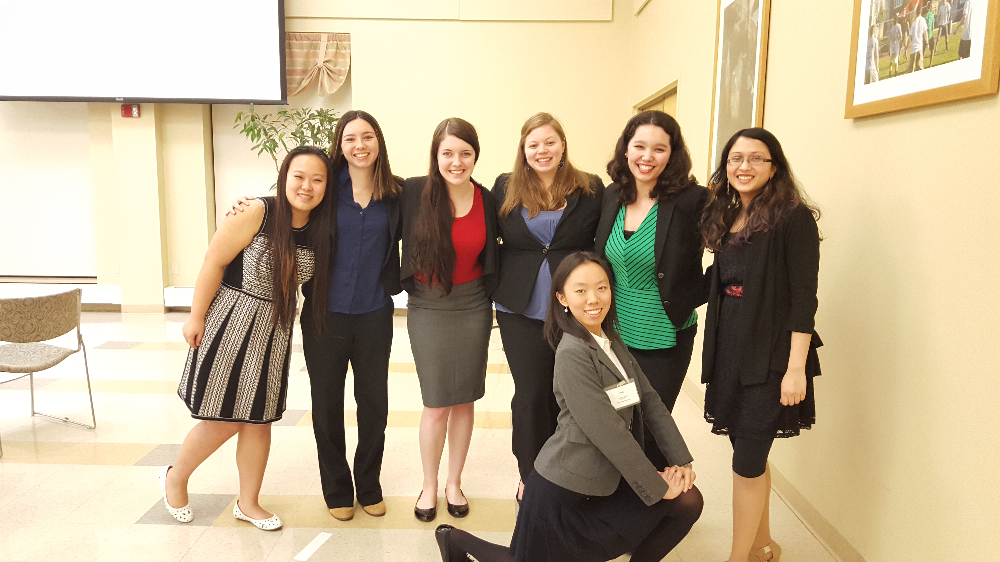

Welcome to WiCS!
We are a club that promotes and encourages women in the field of computer science. We represent women who already have an interest in CS, and we want to encourage others to share in that interest as well. We meet once a week to talk about current issues, interests, and just have some fun. We have fun events throughout the year, some which are listed below. For more information, see our events page of past events or visit our facebook page.